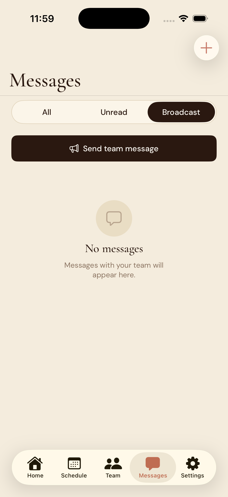

KnotEmployee
Employee scheduling for small businesses — built to replace the paper schedule and the group text.
The Problem
Small businesses manage their staff with paper schedules and group texts. There's no record of who clocked in late, no approval trail for time-off requests, no way to pick up a shift without calling around. For an owner managing 10–20 employees, it's constant overhead with no accountability and nothing to look back on.
The Approach
KnotEmployee is two complete experiences in one binary — a full manager surface and a staff surface, gated by role from the moment of sign-in. The manager gets a drag-and-drop weekly schedule builder, a labor cost report with CSV export, and real-time alerts for overtime warnings and pending approvals. Staff get clock-in and out with break tracking, time-off requests with balance tracking, shift swaps, and direct messaging — every workflow that previously happened over text.
The backend is built on Supabase with multi-tenancy enforced at the database level. Every table carries a tenant ID, and row-level security policies ensure a JWT can only read rows belonging to its tenant. Adding a second business is a configuration change, not a code change.
Push notifications flow entirely through the database — an insert into a notifications table triggers a Deno Edge Function that calls APNs directly, with no third-party SDK. Schedule changes and messages sync live via Supabase Realtime websocket channels scoped per tenant, so every connected device updates the instant a row changes.
Screenshots

Manager home — schedule overview, pending approvals, and overtime alerts at a glance.

Team view — full staff roster with roles, availability, and shift history per employee.

Messages — real-time direct messaging via Supabase Realtime, scoped per tenant.

Employee home — clock in/out, break tracking, and upcoming shifts in one view.

Open shifts — staff can claim available shifts without a manager needing to call around.
The Outcome
KnotEmployee is live on TestFlight with The Bakery Co. as its first client — built collaboratively at CH Studios LLC. It handles every step of the employee management loop from scheduling and clock-in to time-off approvals and team messaging, with a fully custom design system and no third-party UI libraries.